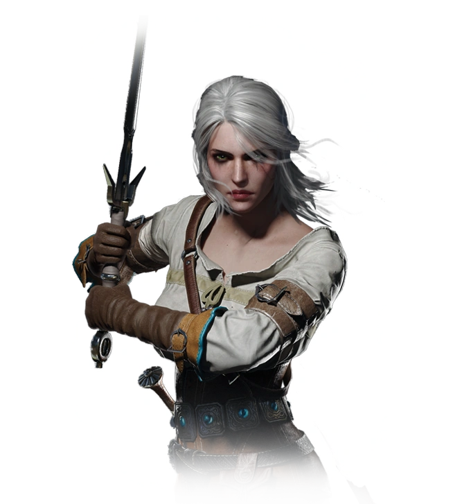

Witaj na stronie internetowej poświęconej postaciom z gry "Wiedźmin 3: Dziki Gon"! Jeśli jesteś fanem tej niesamowitej gry, to jesteś we właściwym miejscu. Tutaj znajdziesz szczegółowe informacje o bohaterach, którzy wypełniają świat Wiedźmina 3. Nasz portal oferuje obszerny przewodnik po postaciach, które napotkasz podczas swojej przygody w świecie Wiedźmina 3. Bez względu na to, czy jesteś nowicjuszem czy doświadczonym graczem, znajdziesz tu cenne informacje i wyjątkowe spojrzenie na różnorodne postacie, które wpływają na fabułę gry. Na naszej stronie przedstawiamy zarówno głównych bohaterów, jak i wielu interesujących postaci pobocznych. Dowiesz się więcej o Geralcie z Rivii, głównym protagoniście, który wciela się w wiedźmina i poluje na potwory. Poznasz również postacie takie jak Yennefer z Vengerbergu, trudna i tajemnicza czarodziejka, czy też Ciri, wiedźmę i przybraną córkę Geralta. Każda postać ma swój własny unikalny opis, historia i rola w świecie Wiedźmina 3. Przewodniki po postaciach zawierają informacje na temat ich umiejętności, cech charakterystycznych, a także interakcji i relacji z innymi postaciami w grze. Odkryj tajemnice i motywacje bohaterów oraz ich wpływ na fabułę i wydarzenia. Nie zapominamy również o postaciach drugoplanowych, które dodają głębi i różnorodności do świata Wiedźmina 3. Odkryj barwnych kupców, szlachetnych rycerzy, tajemnicze czarownice i wiele innych postaci, które wpływają na atmosferę i rozwój fabuły gry. Zachęcamy do przeglądania naszej strony, aby zgłębić świat postaci z gry "Wiedźmin 3: Dziki Gon". Niezależnie od tego, czy chcesz poszerzyć swoją wiedzę na temat ulubionych postaci, czy po prostu czerpać przyjemność z eksploracji głębi ich historii, jesteśmy pewni, że znajdziesz tu wiele interesujących informacji. Ciesz się swoją podróżą przez świat Wiedźmina 3 i zgłębiaj tajemnice postaci, które sprawiły, że ta gra stała się kultowym dziełem.